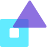
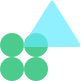

My UX Design Process
I believe that research and design go hand in hand. As a Professional UX Designer, I do both: The UX Research and Design working to create a product people will love to use.
I understand that each company has different UX needs, so I offer flexible collaborations tailored to your product.
My Process
This is how I make your product engaging, beautiful and more useful...

Initial research
For starters I interview your audience and do field research. The product discovery methods help me find out people's wants and needs. I share what I learned on workshops, where we can decide together which direction to go.

Product Strategy
Based on the research I create customer journeys. I build up your user personas, discover and map your product’s full customer journey.
Prototype & Test
Then I create prototypes and test my ideas with real users. This way I can really get more feedback about your upcoming product’s usability.
UI design
Finally, I find the perfect look for your product. After deciding on the visual details I go ahead and create the final, pixel perfect screens.